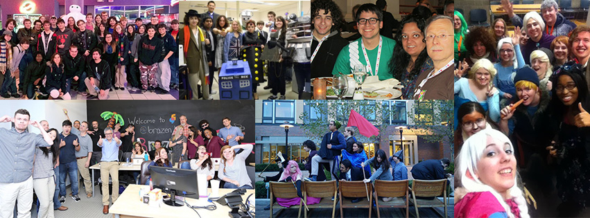

Me
I am a game and software designer and developer with a quote, GIF, fandom reference, or pun for almost any situation.
I enjoy programming, level design, and user interface/user experience design, and I have extensive experience and skills in those areas. I also enjoy drawing, 3D modeling, and 2D and 3D animation. In my spare time, I am a wave fanatic, Nintendo and PC gamer, poi spinner, sci-fi and fantasy nerd, actor, cosplayer, and parody lyric writer, among other things.
-
Work experience
REDCOM Laboratories
Associate Software Engineer
Front- and back-end web programming on the REDCOM Sigma web interface (PHP, PostgreSQL; Bootstrap + jQuery legacy modules, Vue.js next-gereation modules)
May 2019-presentSecond Avenue Learning
Software Developer
Unity 2D & 3D (C#), front-end web programming (including SystemJS), Flash to HTML5 conversion
August 2016-November 2018Brazen
Development intern
Java, GWT, and MySQL work on Brazen Connect
Summer 2015Oracle Primavera
Co-op application engineer
Front-end web programming (including Underscore.js, jQuery, RequireJS) for Primavera Prime 14.2
Summer 2014500 BC
Client-side web programmer
Web front-end game screen implementation
August 2011-September 2012TJHSST
Intranet administrator
PHP and web front-end work on Intranet2, Node.js and web front-end work on Intranet 3
September 2010-June 2012TIC
Game design and programming teacher
Taught game development in LOGO and Java
Summer 2011Web design teacher
Taught intro. HTML, CSS, and JS to students Summer 2013Game design and programming teacher
Taught game development in LOGO, Java, JavaScript/Canvas, and Unity 3D (C#)
Summer 2016シンクロ (Shinkuro)
UI programmer
Python and YUI front-end work on file syncing application
Summer 2010Additionally, in high school I co-founded Inverted Productions as a small game development group, and continue to develop independent games under that brand (including Workshop Scramble and Legit. TD).
I also design tabletop games with Rasklz Publishing.
-
Education
Rochester Institute Of Technology (RIT)
Game Design and Development, Software Engineering
Class of 2016
Thomas Jefferson High School For Science And Technology (TJHSST)
Senior research: Computer Systems
Class of 2012
Voted #1 in the country from the year before I started until the year after I left. Coincidence? Yeah, probably...
Experienced with...
Programming languages
HTML/CSS/JavaScript, Python, ActionScript, C#, Java, PHP, Perl, C/C++. (Additionally, TI BASIC and LOGO)
(Ordered by proficiency and preference)Workflow tools
e.g., Git, Slack, JIRA, JetBrains IDEs
Also Mercurial and SubversionDesign languages
e.g., Material, Holo, Human Interface, Universal Windows Platform
Level editors and SDKs
e.g., Unity, Source/Hammer
Hot trends
e.g., adaptive design, progressive web apps, new ECMAScript features, CSS optimization strategies
Favorite quotes
“Many people would sooner die than think. In fact they do.” —Bertrand Russell
“A lot of folks need to learn stuff. It's up to us already-knowin'-stuff folk to just be there for 'em—bein' the best we can be.” —Sparks Nevada, Marshal On Mars
“Be the change you wish to see in the world.” —Gandhi
“If you're not amused by what goes on in the world on a regular basis, it's your own fault.” —Shane Torbert
“The longer anyone spends on earth, the closer we all get to becoming superfluous characters.” —Joseph Gordon-Levitt